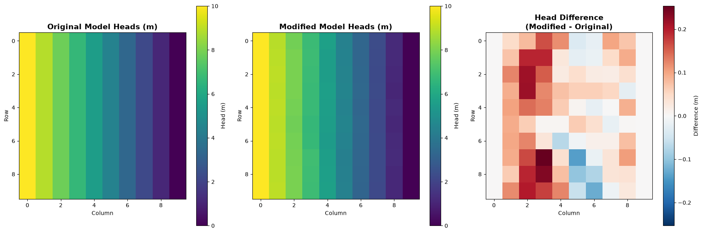

Flopy Tutorial: Loading and modifying a Simple MODFLOW Model
In the previous tutorial, we created a simple MODFLOW-2005 model using FloPy. In this tutorial, we will explore how to load in the model input files that we created in the previous tutorial, and then modify some of the model inputs to see how the model responds to our changes.
First, let’s complete our standard imports and set up the model name and path to the MODFLOW executable. We then simply use the flopy.modflow.Modflow.load() function to load in the model from the existing input files.
import flopyimport numpy as npimport matplotlib.pyplot as pltimport matplotlib as mpimport osmodelname ="simple_modflow_model"original_ws ='./simple_model'modflow_path ='../../modflow/mf2005'm = flopy.modflow.Modflow.load(f'{original_ws}/{modelname}.nam', exe_name=modflow_path)print(m)
With our model in hand we now wish to modify some pieces of it. Let’s start by examining the model structure and some of the key packages that we will want to modify.
# List all packages in the modelprint("Available packages:")print(m.get_package_list())print("\n"+"="*60)# Get model dimensionsprint(f"\nModel dimensions:")print(f" Layers: {m.nlay}")print(f" Rows: {m.nrow}")print(f" Columns: {m.ncol}")print(f" Stress periods: {m.nper}")print("\n"+"="*60)# Access specific packagesdis = m.dis # Discretization packagebas = m.bas6 # Basic packagelpf = m.lpf # Layer Property Flow packagewel = m.wel # Well packagerch = m.rch # Recharge packageprint(f"\nKey package information:")print(f" DIS - Discretization")print(f" BAS6 - Basic Package")print(f" LPF - Layer Property Flow")print(f" WEL - Well Package")print(f" RCH - Recharge Package")
Now let’s create a modified version of the model with different hydraulic properties. We’ll create this in a separate directory to avoid overwriting the original model outputs.
The key principle: Always write modified models to separate directories to preserve original results!
m_original = flopy.modflow.Modflow.load(f'{original_ws}/{modelname}.nam', exe_name=modflow_path, check=False)# Set up the modified model in a SEPARATE directorynew_modelname ='modified_model'model_ws_modified ='./modified_model'os.makedirs(model_ws_modified, exist_ok=True)m_mod = flopy.modflow.Modflow(modelname=new_modelname, exe_name=modflow_path, model_ws=model_ws_modified)# Copy discretization from originaldis = flopy.modflow.ModflowDis(m_mod, nlay=m.nlay, nrow=m.nrow, ncol=m.ncol, delr=m.dis.delr.array, delc=m.dis.delc.array, top=m.dis.top.array, botm=m.dis.botm.array, nper=m.nper, perlen=m.dis.perlen.array, nstp=m.dis.nstp.array, steady=m.dis.steady.array)# Copy basic packagebas = flopy.modflow.ModflowBas(m_mod, ibound=m.bas6.ibound.array, strt=m.bas6.strt.array)# Modify hydraulic conductivity to introduce heterogeneitynp.random.seed(42) # For reproducibilitynew_hk = np.random.normal(loc=10.0, scale=2.0, size=hk.shape) # Mean 10 m/d, std 2 m/dnew_hk[new_hk <0.1] =0.1# Ensure minimum K value# Create LPF package with modified Klpf_mod = flopy.modflow.ModflowLpf(m_mod, hk=new_hk, vka=1.0, sy=0.2, ss=1e-5, laytyp=1)# Add solverpcg = flopy.modflow.ModflowPcg(m_mod)# Add Output Control - CRITICAL for saving outputs!spd = {(0, 0): ['save head', 'save budget']}oc = flopy.modflow.ModflowOc(m_mod, stress_period_data=spd, compact=True)print(f"\nModified hydraulic conductivity:")print(f" Original K: {np.mean(hk):.2f} m/d (uniform)")print(f" Modified K: {np.mean(new_hk):.2f} ± {np.std(new_hk):.2f} m/d (heterogeneous)")print(f" Range: {np.min(new_hk):.2f} - {np.max(new_hk):.2f} m/d")
# Write and run the modified modelm_mod.write_input()success, buff = m_mod.run_model(silent=True)hds_path =f'{model_ws_modified}/{new_modelname}.hds'
4. Comparing Model Results
Now let’s compare the hydraulic heads between the original and modified models to see how the heterogeneous hydraulic conductivity affected the groundwater flow system.
# Define file paths for both modelsheadfile_original =f'{original_ws}/{modelname}.hds'headfile_modified =f'{model_ws_modified}/{new_modelname}.hds'# Check if output files existifnot os.path.exists(headfile_original):raiseFileNotFoundError(f"Original model head file not found: {headfile_original}")ifnot os.path.exists(headfile_modified):raiseFileNotFoundError(f"Modified model head file not found: {headfile_modified}")# Read heads from the original modelhds_original = flopy.utils.HeadFile(headfile_original)head_original = hds_original.get_data()# Read heads from the modified modelhds_modified = flopy.utils.HeadFile(headfile_modified)head_modified = hds_modified.get_data()# Calculate head difference and plot resultshead_diff = head_modified - head_originalfig, axes = plt.subplots(1, 3, figsize=(18, 6))cmap = mp.cm.viridis# Original headsim1 = axes[0].imshow(head_original[0, :, :], cmap=cmap)axes[0].set_title('Original Model Heads (m)', fontsize=14, fontweight='bold')axes[0].set_xlabel('Column')axes[0].set_ylabel('Row')plt.colorbar(im1, ax=axes[0], orientation='vertical', label='Head (m)')# Modified headsim2 = axes[1].imshow(head_modified[0, :, :], cmap=cmap)axes[1].set_title('Modified Model Heads (m)', fontsize=14, fontweight='bold')axes[1].set_xlabel('Column')axes[1].set_ylabel('Row')plt.colorbar(im2, ax=axes[1], orientation='vertical', label='Head (m)')# Head differenceim3 = axes[2].imshow(head_diff[0, :, :], cmap='RdBu_r', vmin=-np.max(np.abs(head_diff)), vmax=np.max(np.abs(head_diff)))axes[2].set_title('Head Difference\n(Modified - Original)', fontsize=14, fontweight='bold')axes[2].set_xlabel('Column')axes[2].set_ylabel('Row')plt.colorbar(im3, ax=axes[2], orientation='vertical', label='Difference (m)')plt.tight_layout()plt.show()

5. Hands-On Exercise: Create Your Own Model Modification
Now it’s your turn! Try creating a different model modification. The modified model above used a random heterogeneous K field. You can try something different!
Ideas for your experiment:
Structured K zones: Create high and low K zones (e.g., a low-K barrier)
Spatial gradients: Make K increase from west to east
Add boundary conditions: Add wells or constant head boundaries
Modify layer geometry: Change elevations or thicknesses
Template for Your Experiment:
Follow the same pattern as above: 1. Create a separate directory for your experiment 2. Load the original model to get the structure 3. Create a new model instance 4. Copy and modify packages 5. Run and compare with the original